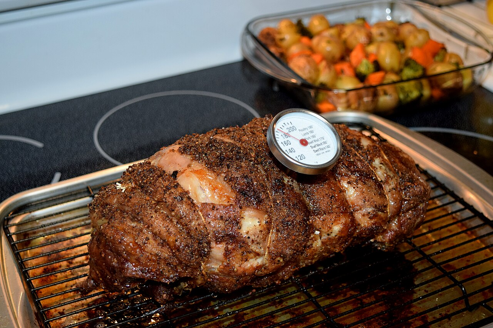
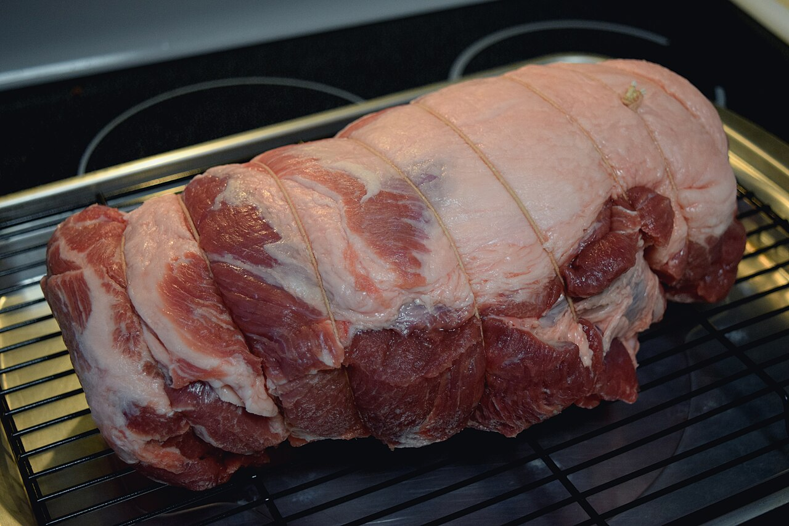
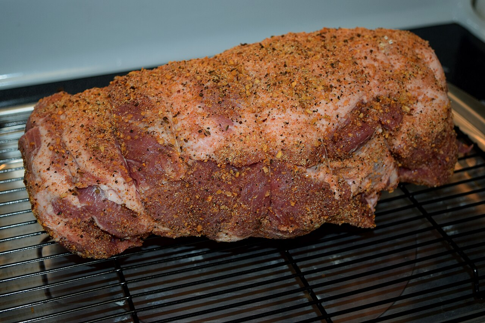
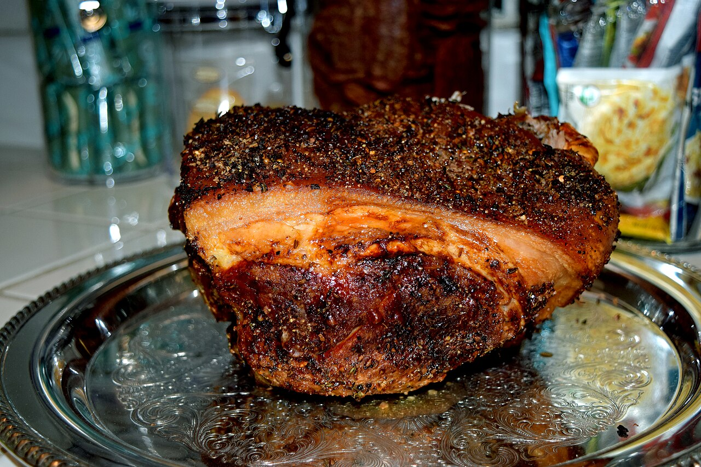

the pitpork shoulder
also: shoulder · Boston butt · butt · pork butt · picnic · picnic shoulder · picnic ham
Lexington menus say 'pork shoulders'; 'butt' means the upper shoulder, not the rear of the animal.

The front leg and shoulder of the pig, sold as one primal — a primal being one of the large first divisions of a carcass — or split in two: the butt, the upper half with the blade bone, and the picnic, the lower arm half, which cured on the bone is a 'picnic ham'. The butt's name is a barrel, not an anatomy. In the North Carolina Piedmont, shoulder is the only cut that counts as barbecue: Lexington pits salt it, lay it over oak and hickory coals for nine to twelve hours, and serve it chopped, coarse chopped or sliced under a red dip. It is darker meat than the loin and stays moist through a long cook, and it is what packers ship when they will not ship a carcass.
First seen. 'Boston butt' in print, 1915, in Hotel Monthly; a 1912 University of Illinois Agricultural Experiment Station bulletin records the barrels still in use for export to Germany and Denmark
Folk: that the butt is the animal's hindquarter. It is not; the cut is the upper shoulder, above the picnic, and may contain the blade bone. Cited · wp-boston-butt
The story Cited · wp-whole-hog-barbecue
New England butchers of the colonial and Revolutionary era stored and shipped pork in barrels called butts, and the shoulder cut they packed that way took the name of the port; a 1912 University of Illinois bulletin notes the barrels still going to Germany and Denmark, and 'Boston butt' first appears in print in 1915. In the Carolinas the cut's rise is the whole hog's decline. The Piedmont settled on shoulders early — Tradition holds — because a shoulder fit a small brick pit and a lunch counter's day in a way a carcass did not. By the 1980s the corporate farms replacing independent hog farms shipped butchered shoulders and hams rather than whole pigs, which pushed restaurants elsewhere the same way. Mallard Creek Presbyterian Church in Charlotte, which began in 1929 by cooking three or four pigs and a goat, told Our State in 2016: 'Now we just use the butt.' South Carolina hash, once made from heads and liver, is now mostly made from leftover shoulder.
How it is done Cited · web-leisuregrouptravel-lexington
Lexington pits cook shoulders only, salted but not basted or marinated, on racks over oak and hickory coals for nine to twelve hours at about 200 to 225 degrees; the Barbecue Center puts three hundred a week through its pit. Elsewhere a butt is rubbed, smoked until it reaches 195 to 205 degrees inside, and shredded. Off the pit the Piedmont serves it three ways — chopped fine, coarse chopped in small chunks, or sliced; never pulled, at Lexington Barbecue — and dresses it with dip. Tradition holds — the crusted outer meat is sold apart as outside brown.
Today Cited · web-lexbbq-menu
Shoulder is the cut of the Piedmont's pits — Lexington Barbecue, the Barbecue Center, Stamey's, Red Bridges, Short Sugar's — and of most new restaurants in both states, because it arrives boxed from the packer; a pulled-pork menu anywhere in the country means this cut. At Lexington Barbecue a chopped tray was $8.00 cash and $8.25 by card in September 2026.
Facts
| kind | cut |
|---|---|
| region | The North Carolina Piedmont, The Carolinas |
| links | Boston butt — Wikipedia · Lexington Barbecue — menu |
| confidence | high · updated 2026-09-15 |
Not to be confused with
- pulled pork — 'Pulled pork' names a preparation of this cut; on a Lexington menu the same shoulder is 'barbecue', and it comes chopped or sliced.
- whole hog — Shoulder meat is all dark and has no crisp skin; a whole-hog chop mixes light meat, dark meat and skin.
Its kin
Who points back
Pictures
{kind=link}

{kind=link}

{kind=link}

{kind=link}
Sources
- Boston butt — Wikipedia · link
- Cut of pork — Wikipedia · link
- Pulled pork — Wikipedia · link
- North Carolina Barbecue Society — Wikipedia · link
- Barbecue in North Carolina — Wikipedia · link
- Whole hog barbecue — Wikipedia · link
- Hash (stew) — Wikipedia · link
- Lexington, North Carolina Barbecue is All About the Pork (Randy Mink) · link
- Lexington Barbecue · link
- Lexington Barbecue — official site · link
- Lexington Barbecue — Menu · link
- Pork & Politics Merge at Mallard Creek Presbyterian Church (Greg Lacour, February 2016, updated 2018) · link
- North Carolina BBQ (oral history project, posted April 25, 2011; introduction by John Shelton Reed) · link
- Running on Full: The North Carolina Historic Barbecue Trail (Bryan Mims, January 29, 2016) · link
- Lexington Barbecue — Wikipedia · link
Where it came from: Cited a source we name · Harvested pulled from an open dataset · Tradition what the tradition says, hedged · Inference this project's reasoning · Field somebody stood there. This record as JSON.